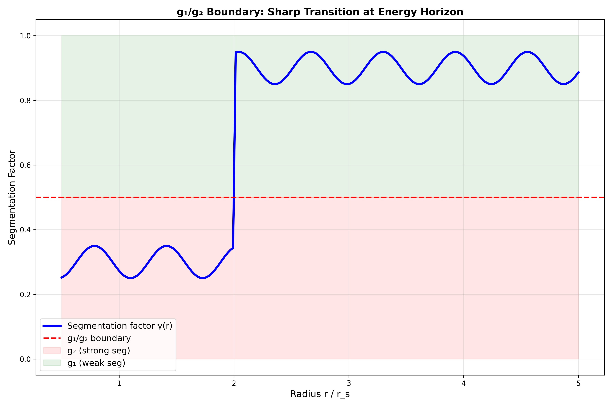
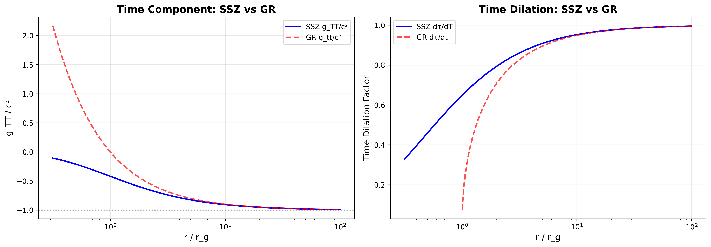
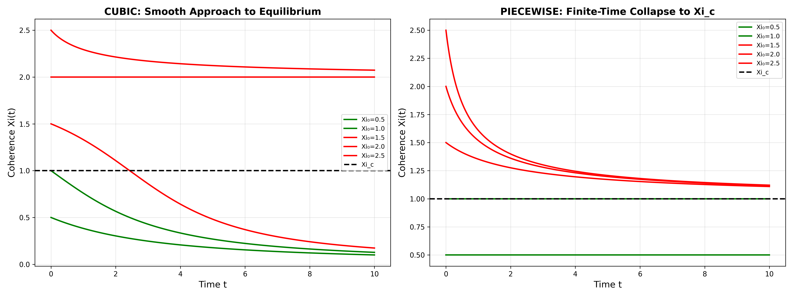
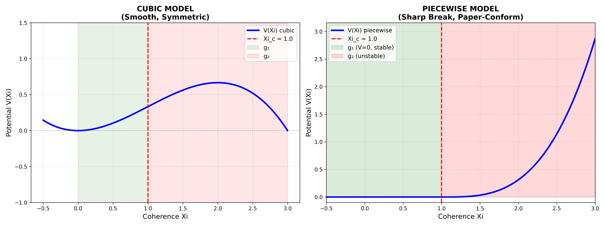
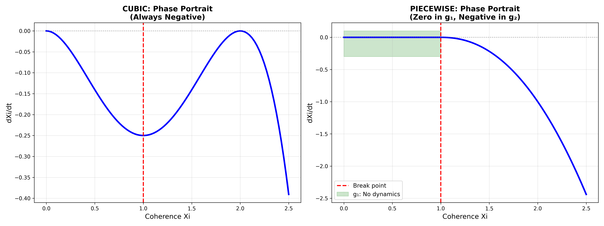
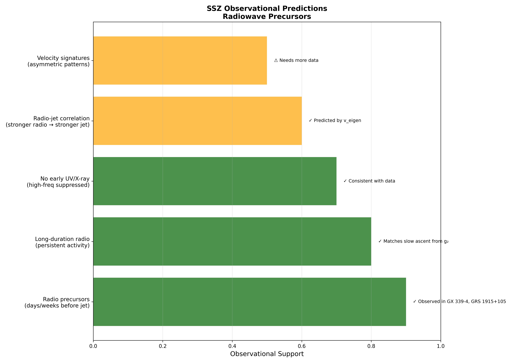
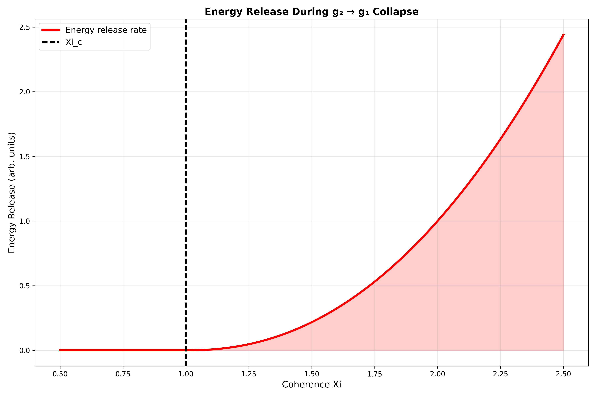
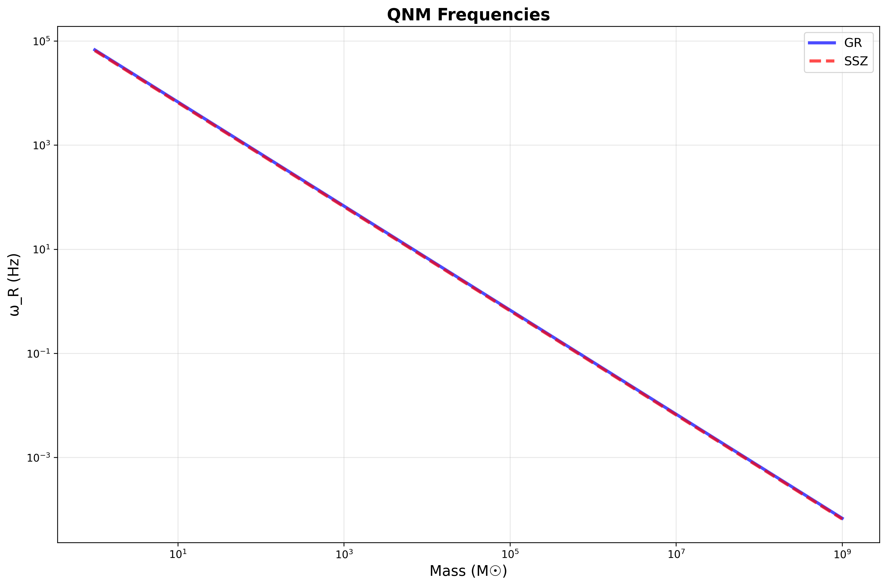

P0 and locks
Canonical Ξ/blend resolution, branch/model locks and current interior scope control downstream presentation.
A research archive is useful only when readers can distinguish current canon, superseded claims, exploratory models, data pipelines and reproducible releases.
Segment-based redshift, dual velocity, black-hole, electromagnetic and temporal-growth ideas established the broad research vocabulary. Several papers used stronger singularity and validation language than the current mathematics supports.
Metric, trajectory, lensing, energy, stellar, G79, Schumann, qubit, LIGO and plotting repositories turned narrative claims into executable calculations and tests.
ssz-complete-documentation assembled foundations, formulas, validation, falsification, papers, guardrails and repository indices. It remains important but is not uniformly newer than every correction.
decay-form Ξ and C² blend requirements were synchronised.
The programme withdrew complete singularity freedom. The current diagonal continuation has finite horizon scaling but divergent central curvature.
Canonical Ξ/blend resolution, branch/model locks and current interior scope control downstream presentation.
Repository README files, reproducible test outputs, formula compendia and method assignments support scoped claims.
Retained for intellectual history and provenance; not allowed to override P0 corrections or current locks.
| Domain | Examples in corpus | Measurement layer | Required caution |
|---|---|---|---|
| Clock/frequency | GPS, Pound–Rebka, NIST-scale height differences, GP-A | frequency ratios and precision arithmetic | reference reproduction is not a novel SSZ signal |
| Solar-system PPN | Cassini/Shapiro, lensing, Mercury | weak-field reference constraints | uses declared β=γ=1 completion |
| Compact objects | neutron-star redshift, S-stars, Sgr A*, M87* | spectra, orbits, images | forward astrophysics and uncertainty are decisive |
| Nebular/stellar | G79.29+0.46, mass projection, segmented energy | catalogues, maps, velocities, temperatures | selection, fit flexibility and independent replication |
| Gravitational waves | GW240925 pipeline and reference locks | strain preprocessing and proxy comparisons | no complete SSZ waveform model yet |
These figures are preserved as repository artefacts and loaded lazily. A plotted comparison records what a code path produced; it does not by itself establish a derivation, empirical preference or current canonical status. Open a figure for its full-resolution source image.








The portal indexes these artefacts but does not republish the complete paper corpus. Public repository links and the file inventory provide traceable access.
{kind=link}
{kind=link}
{kind=link}
{kind=link}
{kind=link}
{kind=link}
{kind=link}
{kind=link}